Гайд по виконанню промки.
Давайте почнем з самого початку.
Що таке лот?
Лот — це об'єм твоєї угоди, тобто скільки ти купуєш або продаєш на ринку.
Наприклад, на золоті при стандартному контракті:
- 0.01 лота
- 1 унція золота
- 0.10 лота
- 10 унцій золота
- 1 лот
- 100 унцій золота
Чим більший лот, тим більше ти заробляєш або втрачаєш при однаковому русі ціни.
Хеджування FX Pro з BingX
Наприклад:
Відкрив ти лонг на FxPro, і в ту секунду на золоті ти відкриваєш шорт на BingX.
Тобто, по факту, ти відкрив лонг і шорт, і рух ціни на тебе майже не впливає. Так можна набивати об’єм, втрачаючи тільки на спреді й комісії, і виконати умови та забрати 250 $.
Єдине, що треба — баланс на FX Pro і баланс на BingX. Тобі не потрібно навіть 510 доларів на BingX, бо ми будемо брати менші позиції. Про це все поговоримо знизу.
Як робити цей хедж?
Тобі потрібно 2 інструменти:
- FX Pro
- BingX — зареєструватись
Якщо у тебе немає біржі BingX, то скачай біржу BYBIT.
Для цього тобі потрібна ще одна біржа BingX — зареєструватись.
Якщо у тебе вже є акаунт, заповни форму тут.
Тобі потрібно зайти на MT5 і підготуватись для того, щоб відкрити хедж.
Відеогайд по МТ + скріни
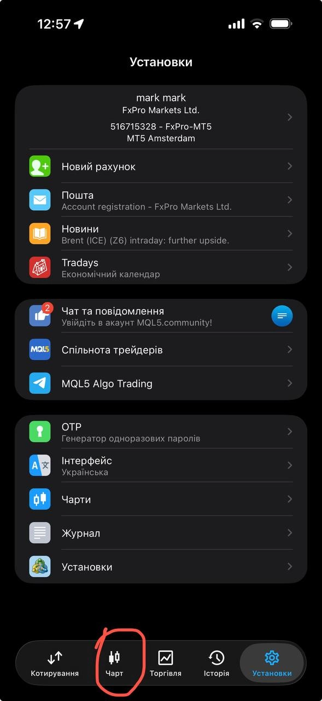
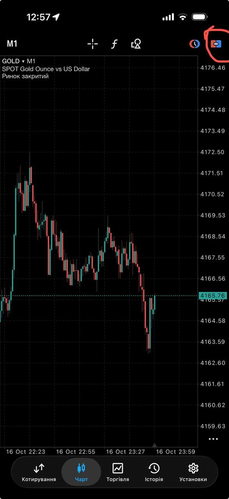
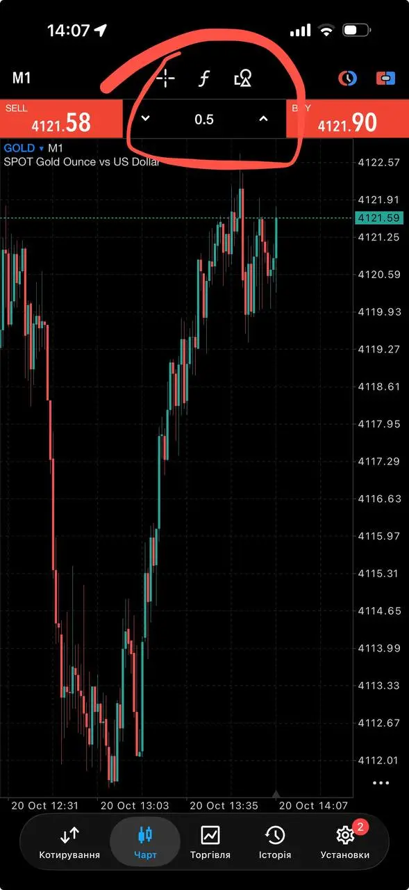
Для тесту відкрий перший хедж на 0.1 лота, щоб все зрозуміти, потім переходь до 0.5.
Окей, по МетаТрейдеру до відкриття угоди ми підготувались
Переходимо до BingX. Зареєструй акаунт: https://bingxdao.com/invite/CIGW5K/
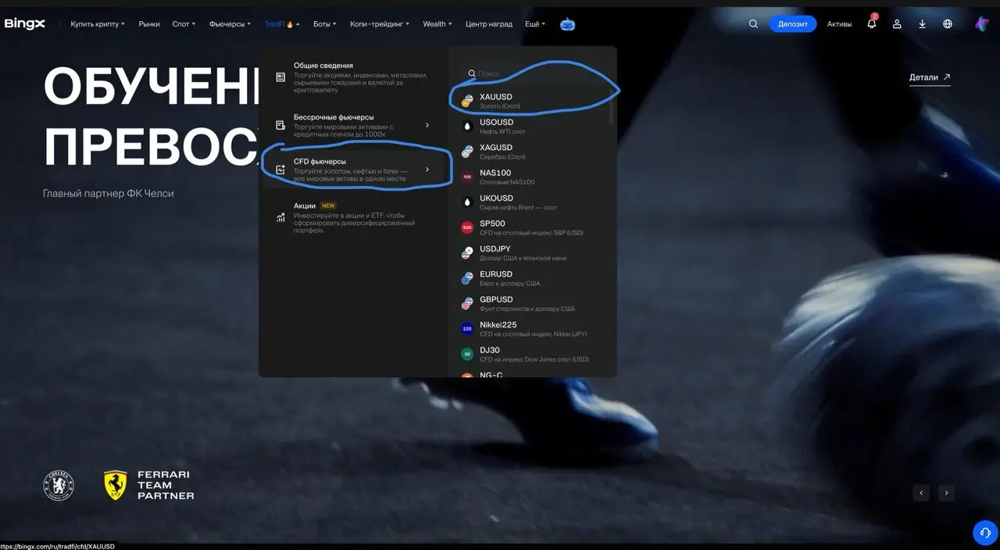
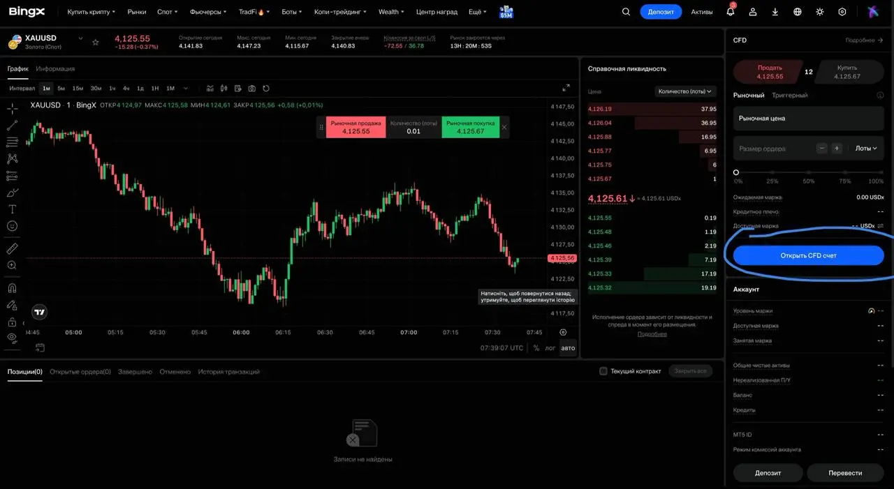
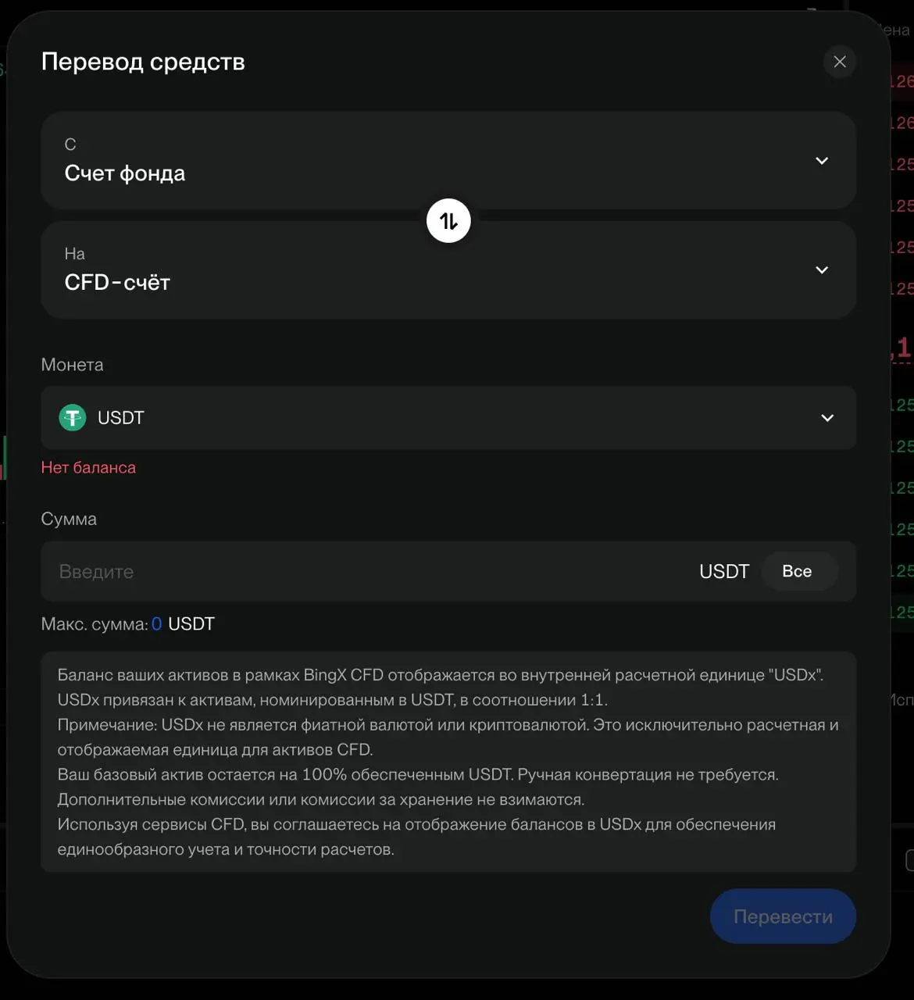
Переведи суму, яка тобі комфортна, мінімум 200 доларів.
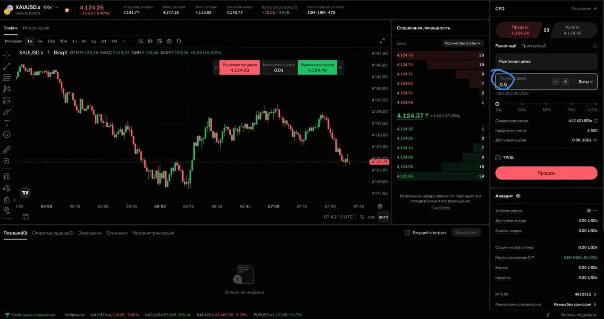
Тепер, коли у тебе все готово, тобі потрібно відкрити хедж.
- ОБОВ'ЯЗКОВО перевір, що у тебе вказаний однаковий лотаж! (скріни, де пише лотаж знизу).
- Тільки після цього можеш відкривати трейд одночасно, якщо у тебе однаковий лотаж.
- Також рекомендую це робити з 10:00 до 22:00.
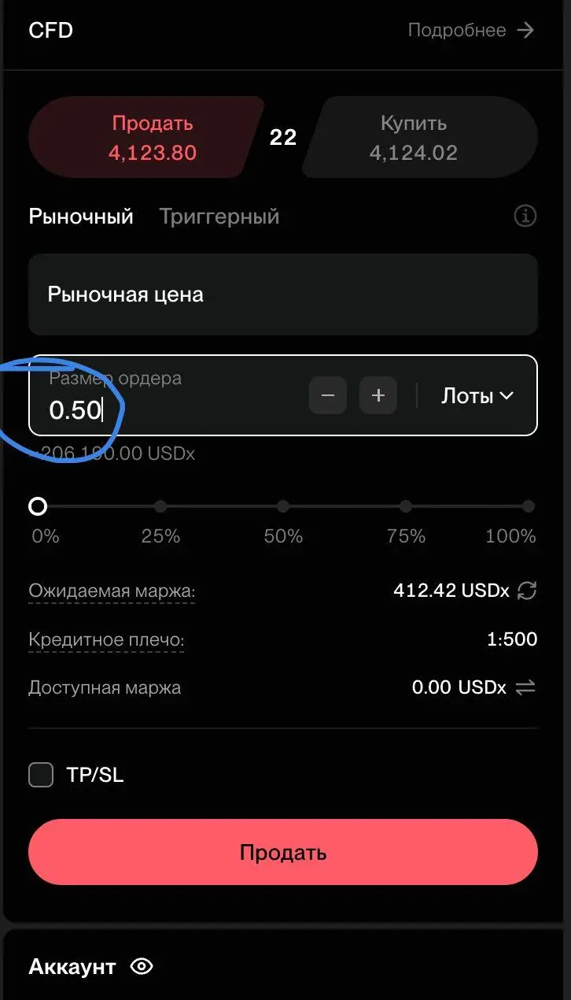
Якщо у тебе не працює біржа BingX, тобто ти не можеш це зробити на біржі BingX, то зроби це на біржі BYBIT. Нижче гайд.
Гайд по BYBIT+
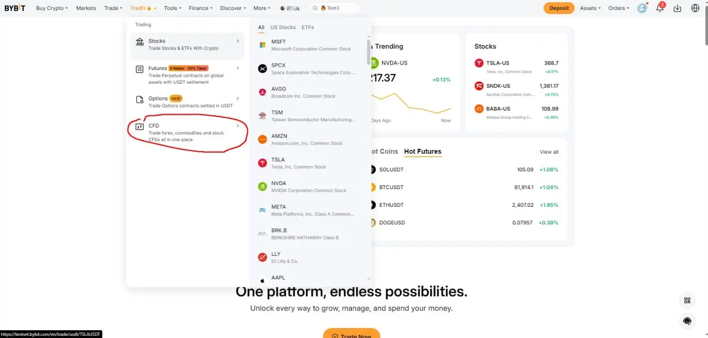
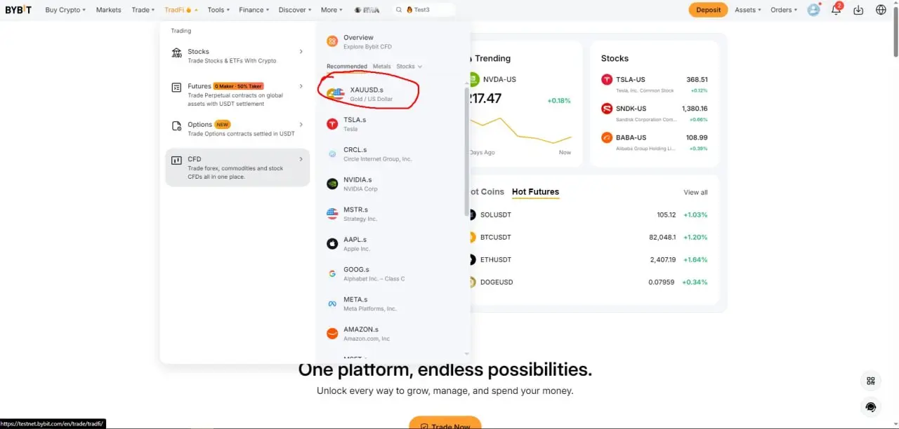
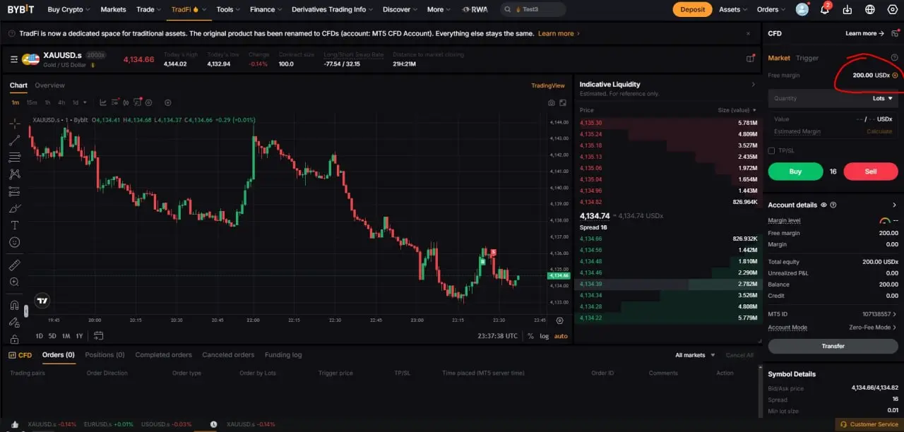
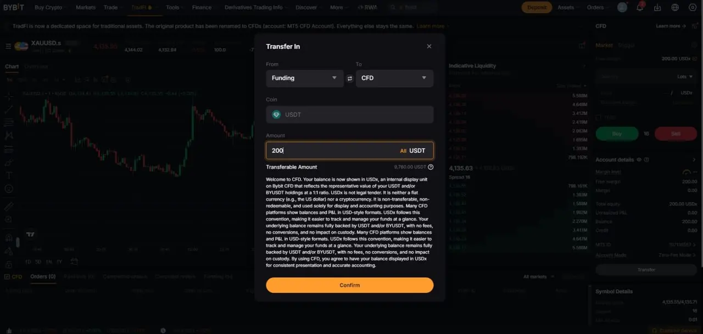
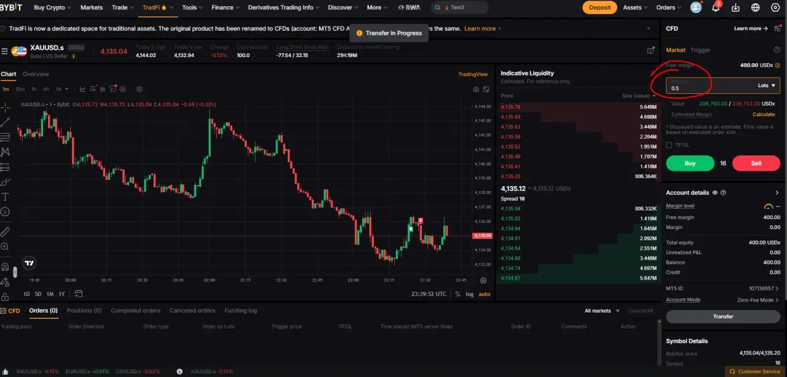
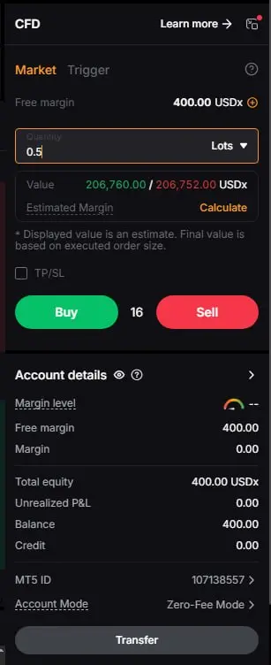
Відкривати на 0.5 або більше лота, раз в день. Тобі потрібно максимум 5 днів, щоб виконати умови. Для чого раз в день? Щоб брокер не замітив ніякої дивної активності.
Також хочу сказати: тримай трейд не менше 5 хвилин, і рекомендую не більше 15 хв. Це вже на твою думку, тобі потрібно потримати мінімум 5 хвилин — все.
Коли ви потримали позицію, вам потрібно закрити позицію одночасно на МТ5 і на BingX.
Все, діло зроблено. Об'єм 0.5 лота вже є, майже не втрачаючи коштів (тільки на спред і комісію). Тобі треба повторити це декілька разів, і ти виконаєш умови по об'єму (2.3 лота). Лишається тільки протримати депозит до кінця місяця (якщо умови по об'єму вже виконані).
Тобі потрібно зрозуміти, що ти не можеш визначитись, чи ціна піде в лонг, чи в шорт. Тому таке може бути, що ти закриєш профіт на FX Pro, а на BingX — мінус.
Єдине, на чому ти можеш втратити, — це спред. Будь акуратний і відкривай угоди одночасно. Я перевірив це на 10 акаунтах: при правильних діях витрати будуть максимум 50 доларів.
Тоді виходить, що ти переливаєш ще додаткові кошти на FX Pro і морозиш до виконання промки. Але думаю, 250 доларів на дорозі не валяються. Це єдиний мінус у цьому способі.
Ми могли просто тобі дати сигнали й сказати: торгуй. Але ми хочемо зробити для тебе найкращі умови зі всього ринку, через то ми дійшли до такого гайду.
Що не можна робити
Ми це будемо детектити й можемо тобі не виплатити кошти (250 доларів).
- А
Хеджування
Ти не можеш відкрити лонг і шорт на одному акаунті й набити так лотаж. Тобі потрібно наторгувати реальний об'єм, тільки як описано в гайді, не в себе на брокері.
- Б
Мінімальний час угоди
Мінімальний час угоди — 3 хвилини, не менше. Все, що менше, не зараховується. Зроблено для того, щоб трейд не відкривався на 1 секунду на 2.5 лота і закрили.
- В
Не виводити кошти до кінця місяця
Щось не зійшлося?
Напиши менеджеру, розберемо. Краще спитати зараз, ніж вгадувати на своїх грошах.
Написати менеджеру → @managvalik